Consultas¶
Consultas¶
Las consultas son vistas parciales de la información contenida en nuestras bases de datos. Se pueden realizar sobre una o varias tablas relacionadas y el resultado que devuelven se muestran también en forma de tabla.
Creación de consultas con una tabla¶
Para explicar su funcionamiento, vamos a realizar una consulta sobre la tabla Interpretes para mostrar:
- Nombre
- Apellidos
- Nacionalidad de los intérpretes que no son españoles
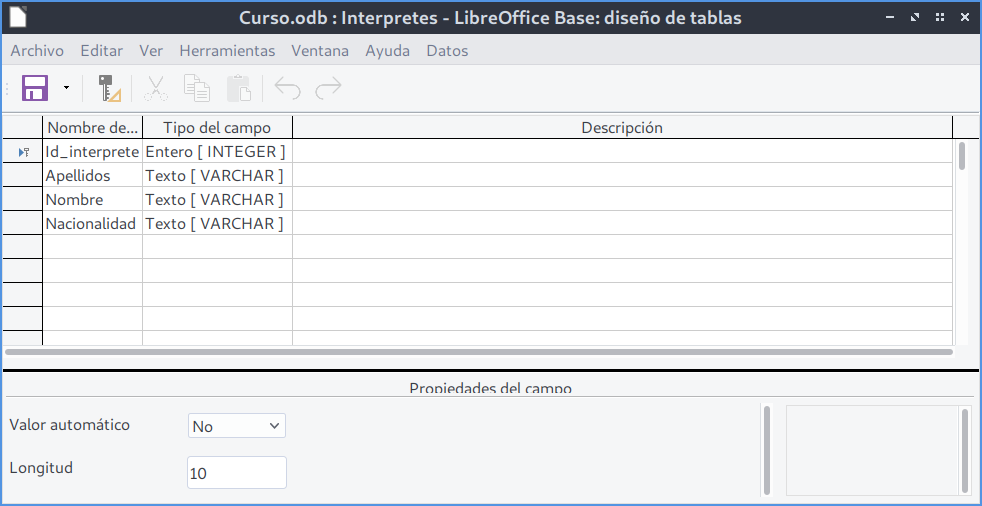
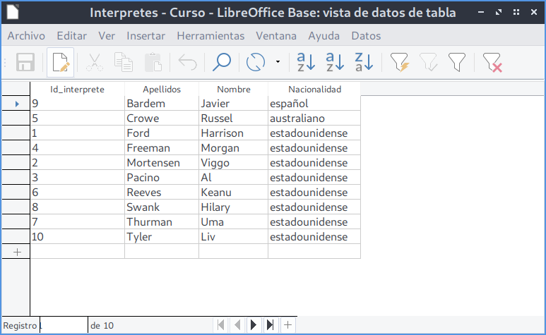
Pasos para crear consultas con asistente¶
Para realizar esta consulta vamos a utilizar el asistente. Iremos a la sección Tareas > Consulta > Usar el asistente para crear una consulta…
-
Seleccionar campos a mostrar
- Elegir los campos: Nombre, Apellidos, Nacionalidad
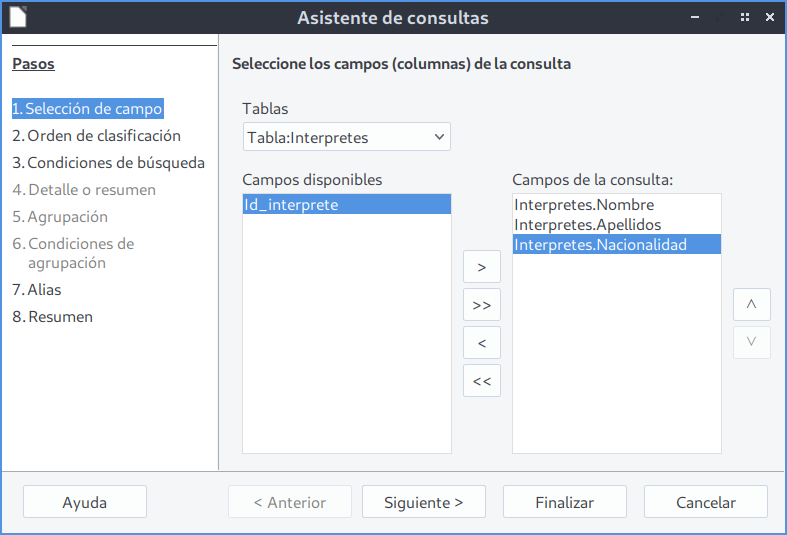
Selección de campos a mostrar -
Ordenar resultados (opcional)
- Ordenar alfabéticamente por Apellidos.
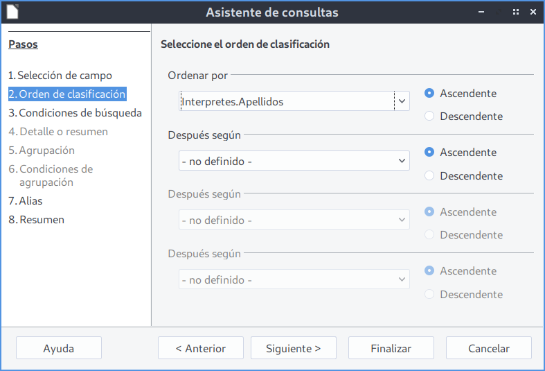
Criterios de ordenación -
Aplicar criterios de búsqueda
- Mostrar solo intérpretes que no sean españoles.
- Campo: Nacionalidad → Condición:<> "español".
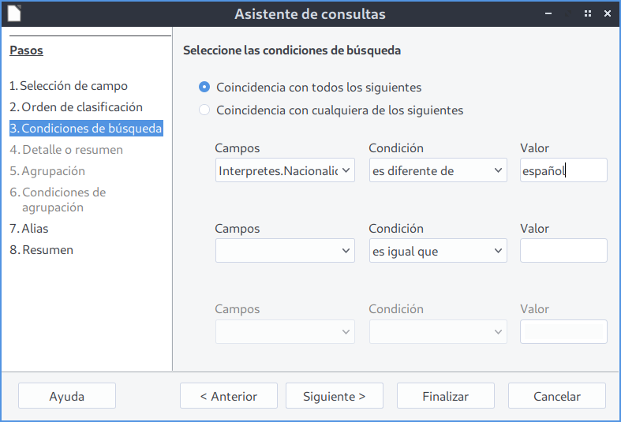
Criterios de búsqueda -
Configurar alias de columnas
- Quitar el nombre de la tabla de las cabeceras si es necesario.
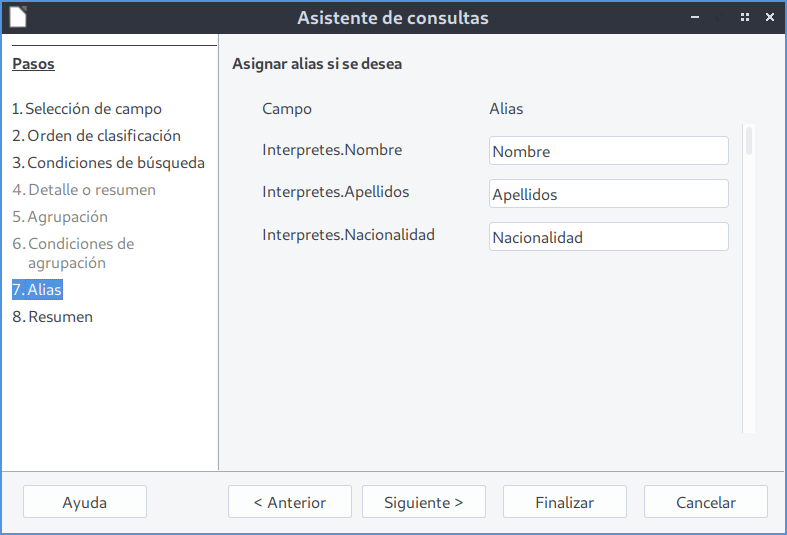
Alias de columnas -
Guardar la consulta
- Nombre: Consulta_Interpretes.
- Elegir si se muestra el resultado inmediatamente o se abre en modo diseño.
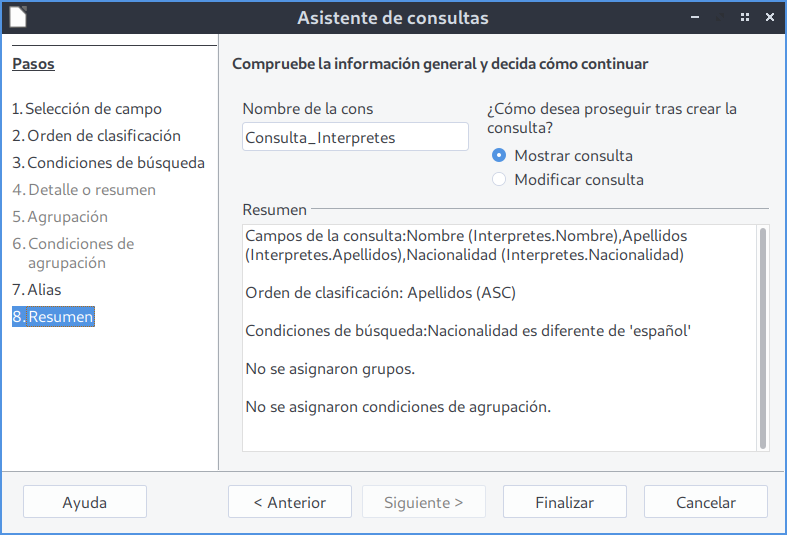
Resumen y nombre de la consulta -
Resultado de la consulta
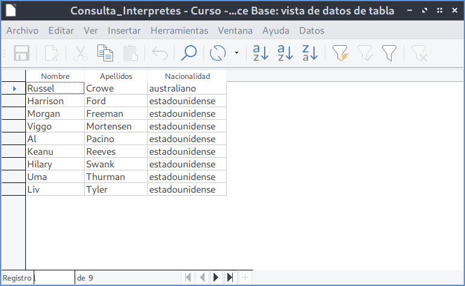
Una vez cerramos la consulta, esta ya queda almacenada en la sección Consultas y podemos hacer uso de ella en cualquier momento.
Creación de consultas con varias tablas¶
Ahora vamos a realizar una consulta que nos muestre las películas junto con el nombre del género al que pertenecen.
Gracias a esta consulta, podremos comprobar el gran potencial de guardar la información distribuida en varias tablas, habiendo previamente establecido relaciones entre ellas.
Para crear la consulta, primero utilizaremos el Asistente de consultas para obtener un primer borrador y, posteriormente, la afinaremos en modo Diseño.
Pasos para crear consultas combinando el asistente de consultas y el modo diseño¶
-
Abrir el asistente de consultas
- Ir a la sección Tareas del tipo de objeto Consulta
- Elegir Usar el asistente para crear una consulta… -
Seleccionar los campos de la tabla
Peliculas
- Elegir los campos: Titulo, Director, Año, Formato
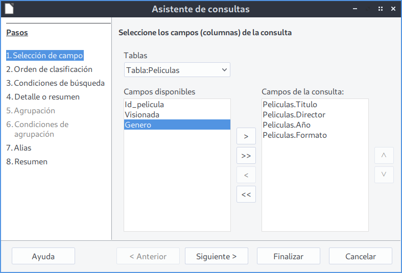
Selección de campos de la tabla Peliculas -
Establecer criterios de ordenación
- Ordenar primero por Director
- Si coinciden los directores, ordenar por Titulo
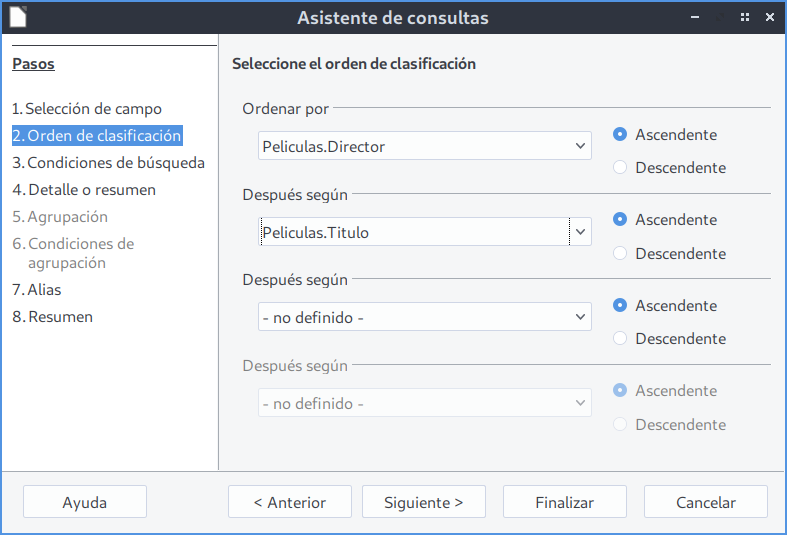
Criterios de ordenación para la consulta -
No aplicar filtros
- En esta consulta no vamos a filtrar datos, por lo que se omite el paso de criterios de búsqueda. -
Modificar alias de los campos
- Cambiar el campo Titulo para que aparezca correctamente con tilde.
- Cambiar el campo Año para mostrarlo como Fecha de estreno.
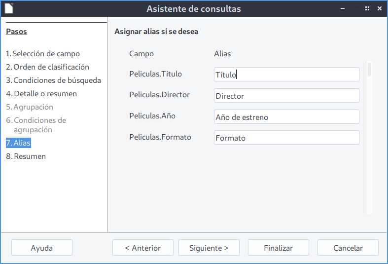
Modificación de los alias de los campos -
Resumen y nombre de la consulta
- Indicar el nombre: Consulta_Peliculas_Generos . Con esto obtenemos un borrador de la consulta que ya incluye los campos, el orden y los alias, y estamos listos para pasar a modo Diseño y añadir información de la tablaGeneros.
- Activar la casilla Modificar consulta para continuar trabajando en modo Diseño.
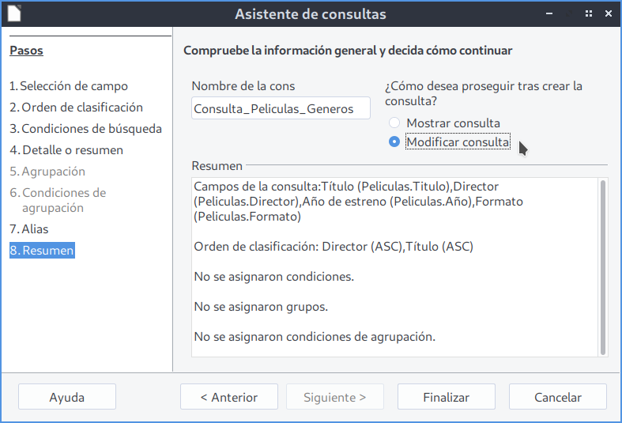
-
Refinar la consulta en modo diseño
- Al abrir la consulta en modo Diseño, se observa que la ventana está dividida horizontalmente en tres partes principales:
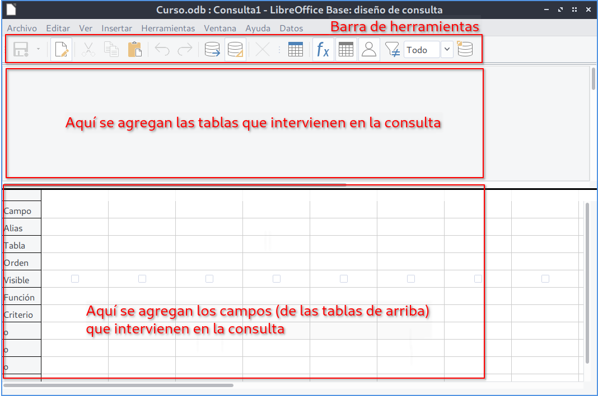
Ventana de creación de consultas en modo Diseño -
Barra de herramientas de consultas, donde encontramos los siguientes botones específicos para consultas:
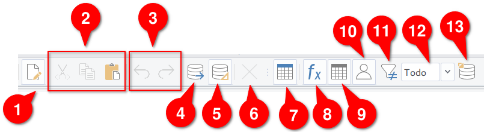
Iconos de la barra de herramientas en modo Diseño Identificador Botón Función 1 Alternar modo de edición (modo Diseño) Permite editar el contenido de los paneles de tablas y campos. 2 Cortar, Copiar y Pegar Operaciones básicas de edición. 3 Deshacer y Rehacer Permite revertir o repetir acciones realizadas. 4 Ejecutar consulta Muestra el resultado de la consulta sin necesidad de salir del modo de edición. Hay que tener en cuenta que no guarda la consulta. 5 Activar o desactivar la vista Diseño Si desactivamos el modo Diseño, aparece la consola de edición para el lenguaje SQL, donde podremos escribir el código de la consulta; si está activo, tendremos los paneles para tablas y campos. 6 Eliminar consulta Borra la consulta y quita todas las tablas de la vista Diseño. 7 Añadir tabla o consulta Permite agregar alguna otra consulta o más tablas a la consulta actual. 8 Funciones Activa/desactiva la posibilidad de asociar funcionesa los campos.9 Nombre de la tabla Activa/desactiva en el panel inferior el renglón Tabladonde se muestra el nombre de la tabla a la que pertenece el campo.10 Alias Activa/desactiva en el panel inferior el renglón Aliasdonde se puede definir un nombre alternativo para el campo.11 Valores diferentes Si se activa, elimina los registros duplicados del resultado. Ejemplo: si un género aparece varias veces, solo se mostrará una. 12 Límite Permite indicar cuántas filas devolverá la consulta (por defecto: Todos). 13 Propiedades de la consulta Acceso a configuraciones avanzadas de la consulta. -
Panel central, donde se muestran las tablas y consultas incluidas.
-
Panel inferior, una cuadrícula donde cada columna representa un campo de la consulta y permite configurar distintos aspectos de su comportamiento.
Opción Función Campo Nombre del campo a mostrar. Se puede usar NombreTabla.*para incluir todos los campos.Alias Nombre que aparecerá como cabecera de la columna. Tabla Tabla a la que pertenece el campo. Orden Permite ordenar los resultados (Ascendente o Descendente). Visible Indica si el campo se muestra en el resultado. Función Permite aplicar operaciones como agrupaciones o cálculos. Criterio Define condiciones de filtrado (>, <, =, etc.). Cuando se aplica una función a un campo, todos los campos deben tener asignada una función.
-
En nuestro caso encontramos la siguiente ventana de diseño:
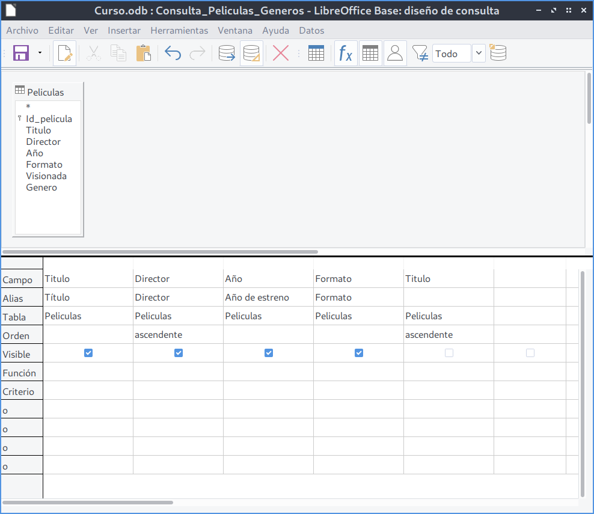
Ventana de diseño de consultas El campo
Tituloaparece dos veces debido al orden deseado: primero mostrarTituloy luegoDirectoren la presentación, pero ordenar porDirectory luegoTitulo. -
Añadir tablas adicionales
-
Mostrar el nombre del género, añadimos la tabla
Generos:- Hacer clic en Añadir tablas (icono en la fila inferior izquierda).
- Seleccionar la tabla
Generosy pulsar Añadir. - Cerrar la ventana de selección.
LibreOffice Base detecta automáticamente la relación entre
PeliculasyGeneros, evitando que se generen combinaciones erróneas de filas (producto cartesiano).
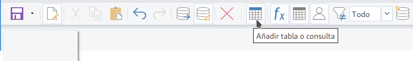
Botón para añadir tablas a la consulta -
-
Añadir campos de la nueva tabla
-
Seleccionar el campo Nombre de
Generosy añadirlo a la cuadrícula inferior.
Opciones: 1. Arrastrar el campo desde el panel superior.
2. Usar la lista desplegable en la última columna de la cuadrícula inferior y seleccionarGeneros.Nombre. -
Marcar la opción Visible para que el campo aparezca en el resultado.
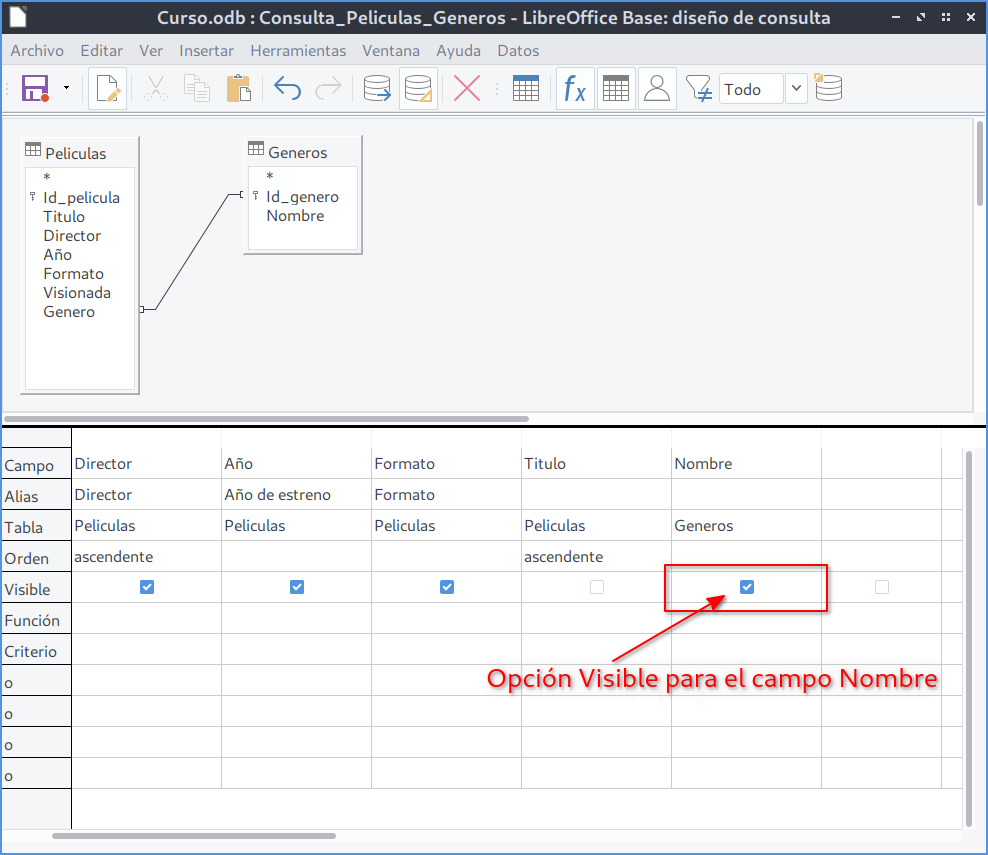
Añadir campos de la segunda tabla -
-
Modificar alias de los campos
- Cambiar el alias de
Generos.Nombrea Género para que sea más comprensible.
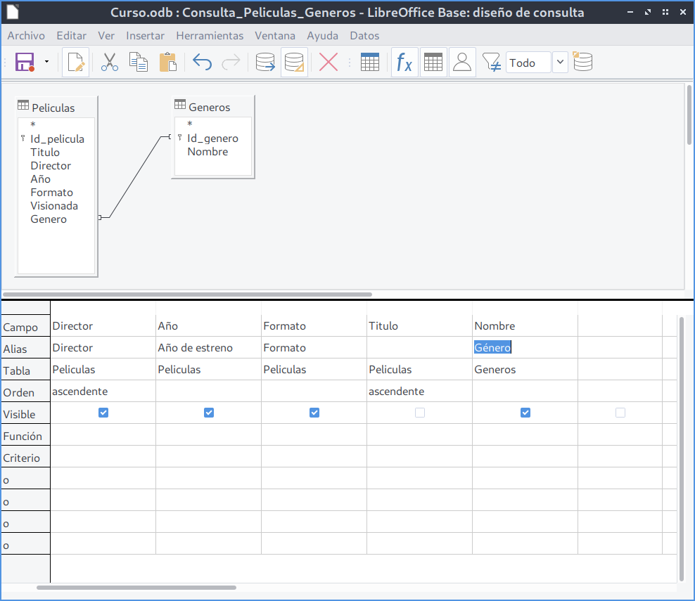
Cambio de alias del campo Nombre de Generos - Cambiar el alias de
-
Comprobar resultados
- Ejecutar la consulta desde el modo Diseño usando el icono de ejecución (
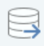
).
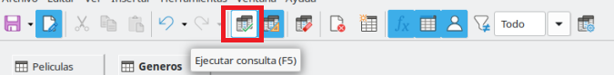
Botón de ejecución nueva versión - Verificar que los resultados muestran correctamente los campos de
Peliculasy delGénero.
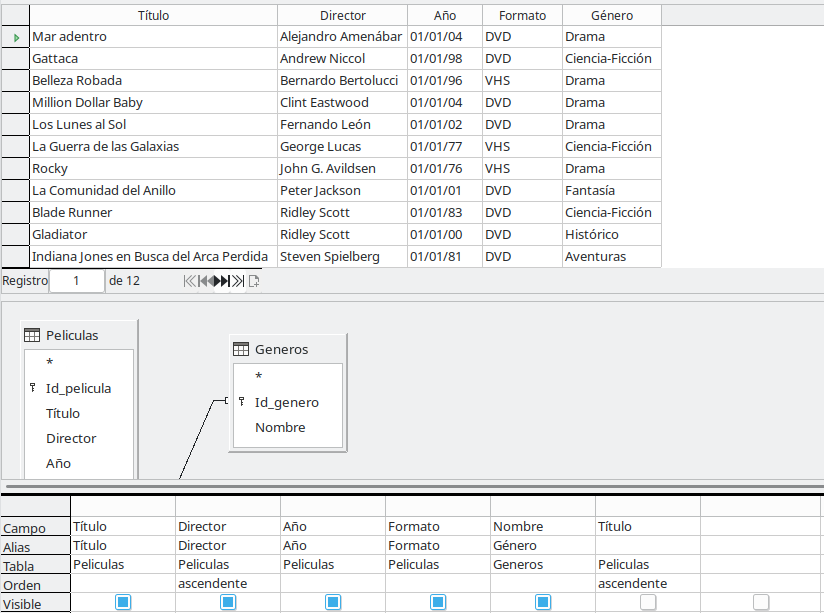
Resultado de la consulta dentro del modo Diseño - Ejecutar la consulta desde el modo Diseño usando el icono de ejecución (
-
Guardar la consulta
- Guardar los cambios de la consulta.
- La consulta aparecerá en la sección Consultas y estará lista para usar.
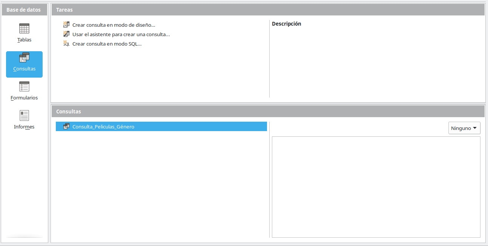
Consultas disponibles
Pasos para crear consultas avanzadas en modo diseño¶
En este apartado vamos a crear una consulta completamente desde la vista Diseño, sin utilizar el asistente.
El objetivo será crear una consulta que muestre:
- Los intérpretes
- Las películas que han protagonizado
- El género de cada película
Es decir, una consulta que utiliza todas las tablas de la base de datos.
-
Abrir el asistente de consultas
- Ir a la sección Tareas del tipo de objeto Consulta.
- Elegir Crear consultas en modo diseño…. -
Seleccionar las tabla
- Añadimos todas las tablas disponibles (LibreOffice Base detecta automáticamente las relaciones entre ellas.)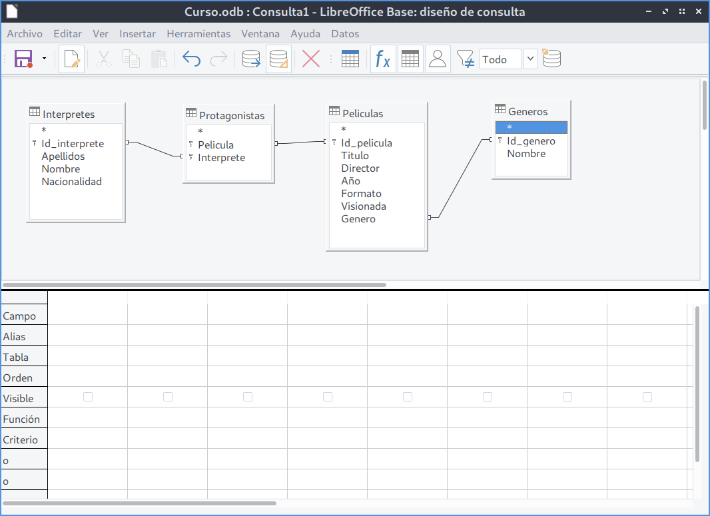
Selección de tablas para la consulta Para evitar que las líneas de relación se crucen, se recomienda añadir las tablas en el orden indicado.
-
Añadir los de campos de la tabla
Interpretes- Id_interprete
- Nombre
- Apellidos
- Nacionalidad
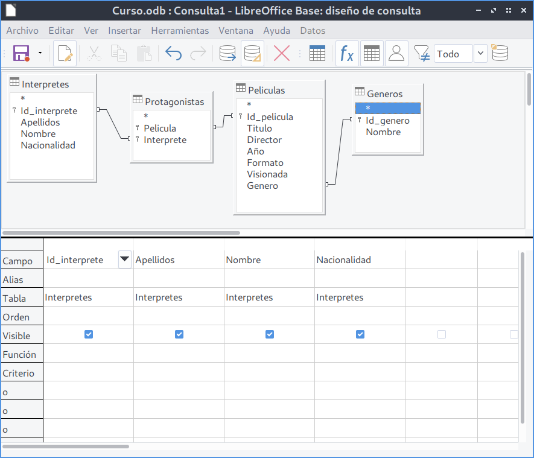
Inclusión de campos de la tabla Interpretes En un entorno real no es necesario mostrar los campos identificadores (
Id_interprete), aunque sí pueden formar parte de la consulta de forma no visible. -
Ordenación de resultados
Indicamos que los resultados se ordenen:
- Primero por Apellidos
- A continuación por Nombre
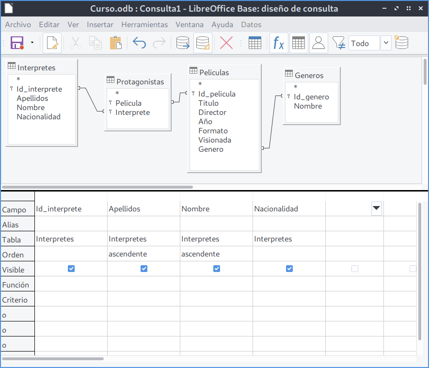
Ordenación de resultados por apellidos y nombre -
Inclusión de todos los campos de la tabla
PeliculasEl campo
Id_peliculase incluye automáticamente, pero puede ocultarse desmarcando la opción Visible.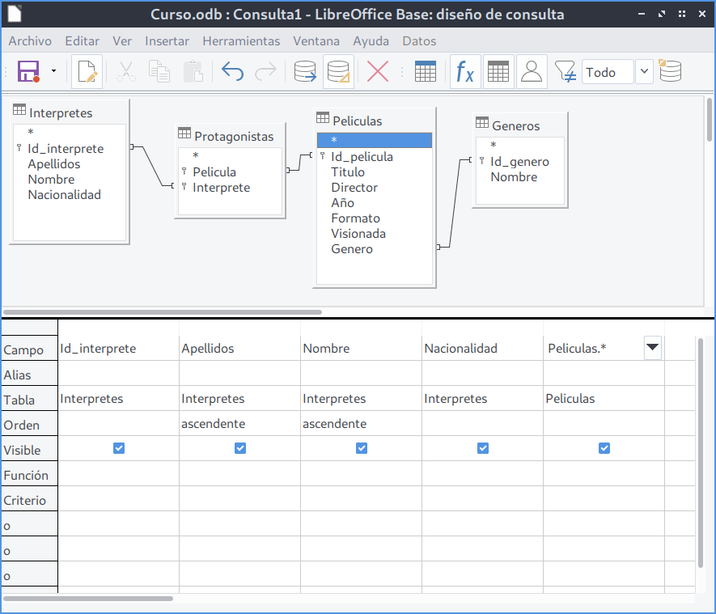
Inclusión de todos los campos de la tabla Peliculas -
Inclusión de todos los campos de la tabla
GenerosNombrede la tablaGeneros- En el alias escribimos NombreGénero, para diferenciarlo de otros campos con el mismo nombre.
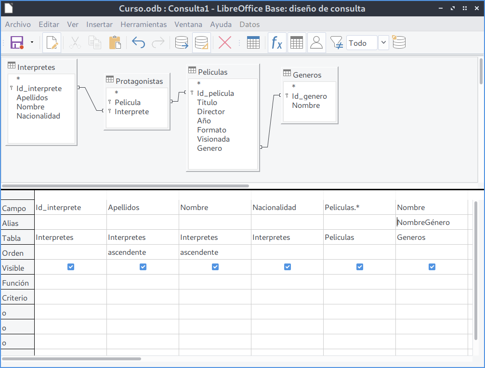
Inclusión del campo Nombre de la tabla Generos -
Guardar y ejecutar la consulta
- Guardamos la consulta con el nombre ConsultaTotal
- Ejecutamos la consulta usando la tecla F5
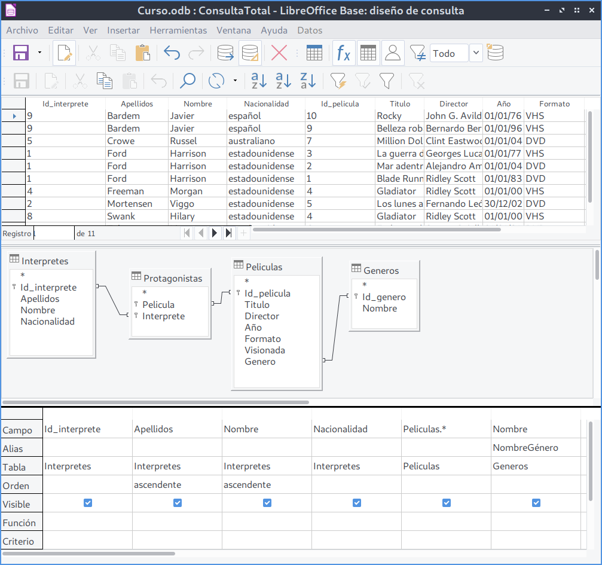
Resultado de la consulta ConsultaTotal
Actividad
📝 AA5.7 Consultas en la base de datos BBDD_Peliculas¶
(C.ESP1 / CE1.1, CE1.2 / IC1-3p)
- Abre la base de datos
BBDD_Pelicula - Crear la consulta Consulta_Interpretes siguiendo los pasos descritos en la unidad.
- Crear la consulta Consulta_Peliculas_Generos siguiendo los pasos descritos en la unidad.
- Crear la consulta ConsultaTotal siguiendo los pasos descritos en la unidad.
- Entrega en un Writer con una capturas de pantalla donde se demuestre los pasos para la realización de cada punto del ejercicio.
Actividad Refuerzo
🔨 AAR5.8 Consultas en la base de datos BBDD_Hospital¶
(C.ESP1 / CE1.1, CE1.2 / IC1-3p)
- Abre la base de datos
BBDD_Hospital - Crear la consulta Consulta_Pacientes_Mujer que muestre sólo los pacientes categorizados como
Mujer. - Crear la consulta Consulta_Visitas_MedicoFabiola que muestre sólo las vistias realizadas por la doctora con nombre
Fabiola. - Crea un consulta ConsultaTotal que use todas las tablas de la base de datos.
- Entrega en un Writer con una capturas de pantalla donde se demuestre los pasos para la realización de cada punto del ejercicio.